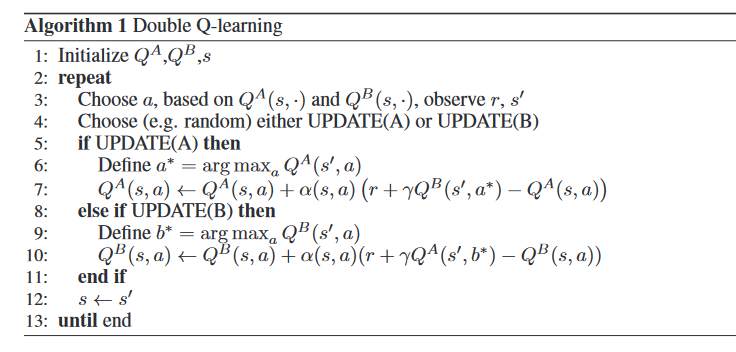

In Q-Learning, it can be impractical to represent `Q`-function as a table containing values for each combination of `s` and `a`. Instead, with Deep Q-Learning we train a function approximator, a neural network with parameters `θ` , to estimate the `Q`-values, i.e, `Q(s,a;θ)≈Q^*(s,a)` This is done by minimising the loss at each step `t`
In addition, we use a technique called Experience Replay during network updates. In this technique, at each time step, the transitions are added to a circular buffer called replay buffer. Then, during training, instead of choosing the most recent action to compute the loss and its gradient, Experience Replay technique uses a mini-batch of transitions sampled from the replay buffer.
Deep Q-Learning Steps:
Initializtion:
1. Experience replay is initialized to an empty list of size M
2.We choose a maximum size of the memory
At each time step `t`, we repeat then following processes until the end of the epoch.
1. We predict the `Q`-values of the current state `s_(t)`
2. We play the action that has the highest `Q`-value: `a_(t) = argmax_{a}{Q(s_(t),a)}`
3. We get the reward `R(s_(t),a_(t))`
4. We reach the next state `s_(t+1)`
5. We append the transition `(s_(t),a_(t),r_(t),s_(t+1))` in the memory M
6. We take a random mini-batch `B ⊂ M` of replay buffer. For all the transitions `(s_(t_(B)),a_(t_(B)),r_(t_(B)),s_(t_(B+1)))` of the random mini-batch `B`.
We get the predictions, `Q(s_(t_(B)),a_(t_(B)))`
We get the target `R(s_(t_(B)),a_(t_(B))) + γmax_{a}(Q(s_(t_(B+1)),a))`
Now, we compute the desired loss between the predictions and the target over the whole mini-batch `B`
Loss `=\frac{1}{2}\sum_{B}(R(s_(t_(B)),a_(t_(B))) + γmax_{a}(Q(s_(t_(B+1)),a)) - Q(s_(t_(B)),a_(t_(B))))^2`
`=\frac{1}{2}\sum_{B}TD_(t_(B))(s_(t_(B)),a_(t_(B)))^2`
Afterwards, we backprop the loss error back into network, and through stochastic gradient descent, we update the weights on network
In Q-Learning, update can be written as:
`Q_(t+1)(s_(t),a_(t)) = Q_(t)(s_(t),a_(t)) + α_(t)(s_(t),a_(t))(R_(t)+γmax_{a}Q_(t)(s_(t+1),a) - Q_(t)(S_(t),a_(t)))` ...eq(1)
Th use of max operator in the above eq of Q-Learning, can cause large over-estimation of the action values. This leads to large performance penalty that slows the learning process too
Therefore, Double Q-Learning proposes the double estimator method. Here, two sets of estimators: `μ^A = {μ_(1)^A,....μ_(M)^A}` and `μ^B = {μ_(1)^B,...., μ_(M)^B}` is used to approximate `max_(i)E{X_(i)}`. The approximation can be written as :
`max_{i}E{X_(i)} = max_{i}E{μ_(i)^B} ≈μ_(a∗)^B` ...eq(2)
Double Q-Learning stores two `Q` functions: `Q^A` and `Q^B`. Each `Q` function is updated with a value from the other `Q` function for the next state. This way it can be considered an unbiased estimate for the value fo this action. For instance, the action `a^∗` in eq(2) is the maximum value action in state `s'`, according to the value function `Q^A`. i.e, `Q^A(s',a^∗) = max_{a}Q^A(s',a)`. However, we still use `Q^B(s',a^∗)` to update `Q^A`
Double Q-Learning converges to the optimal policy in the limit, and faster than Q-Learning, its algorithm is given below :
